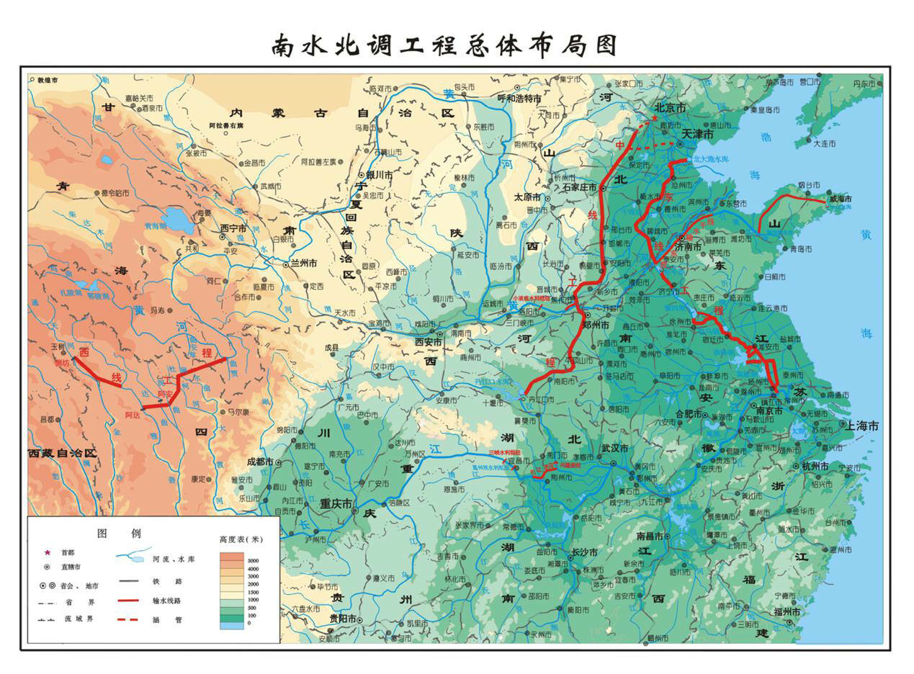

MEMORY SECTIONS · 记忆板块
沿七条路径，进入南水往事
从文献、地图、时间、口述、器物、迁徙与口号出发，选择一条路径进入工程记忆现场。
RIVER RELATION ATLAS · 河流关系图谱
一条水脉，连接时间、地点与人的记忆

文献资料 · 南水北调工程总体布局图PROLOGUE · 专题导语
南水往事导语
一九五二年深秋，黄河岸边，一句“南方水多，北方水少，如有可能，借点水来也是可以的”，为跨流域调水打开了最初的想象。此后，勘测队伍走向江河山川，一项关乎中国水资源格局的宏大构想，开始在地图、报告与一次次论证中寻找可行的路径。
一九五八年，“南水北调”进入中央正式文件；九月一日，汉江丹江口水利枢纽工程举行开工仪式。工地上的测量、爆破、运输与筑坝，将纸面的设想推向真实的山河。一九七四年，丹江口水库初期工程全部完工，为后来从汉江调水北上的工程实践奠定了重要基础。
一九七八年，“兴建把长江水引到黄河以北的南水北调工程”写入《政府工作报告》；一九七九年十二月，南水北调规划办公室成立。从一句设想，到工程落地，再到规划组织逐步建立，这段历程不仅属于水利史，也属于亲历其中的建设者、移民与沿线普通人。
“南水往事记忆空间”聚焦一九五二至一九七九年。我们沿着水脉重新连接档案、地图、器物、影像与口述记忆：既观看工程如何被构想和建设，也倾听宏大工程背后关于劳动、迁徙、故土与选择的个人讲述。
—— 水润中华 · 不忘来路 ——